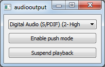

Audio Output Example
Enabling audio playback using the QAudioSink class.
Audio Output demonstrates the basic use cases of QAudioSink.

This example provides a tone generator to supply continuous audio playback. The first button allows pause and resume of the playback, and the second button allows toggling between push and pull modes of operation.
Running the Example
To run the example from Qt Creator, open the Welcome mode and select the example from Examples. For more information, see Qt Creator: Tutorial: Build and run.